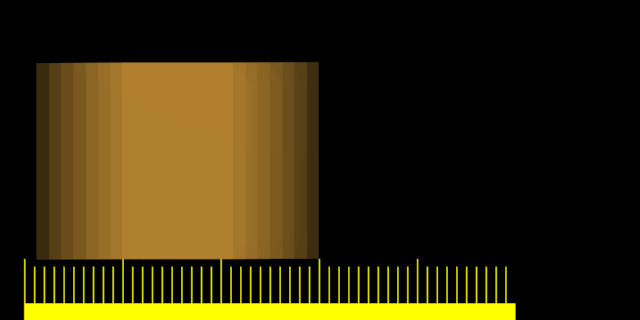

Розмив Рухом -- Motion Blur¶
Анімації у Blender'і стандартно зображуються, рендеряться як відеоряд, послідовність ідеально статичних зображень. Хоча це чудово для ефектів стоп-кадру та часо-плину, це є нереалістичним, оскільки швидко рухомі об'єкти мають виглядати розмитими у напрямку руху, як на кадрах фільму, так і на фотографіях, отриманих за допомогою камер з реального світлу.
Blender має два шляхи для досягнення розмиву руху:
Вибірний Розмив Рухом -- Sampled Motion Blur¶
Blender може зробити, щоб рендерився поточний кадр та декілька «віртуальних» кадрів між ним та наступним кадром, а потім об'єднати їх разом для отримання зображення, де рухомі об'єкти є «розмитими».
Цей метод є повільним, але продукує хороші результати. Він може активуватися у назві панелі Sampled Motion Blur у вкладці Render. Цей тип розмиву руху здійснюється у ході зображування, рендерингу.
- Вибірки Руху -- Motion Samples
- Задає кількість вибірок для взяття у кожному кадрі. Чим більше вибірок, тим згладженіше ефект розмиву, але й тим довше зображування, рендеринг, оскільки має бути відзображений, рендерений кожен віртуальний проміжний кадр.
- Затвор -- Shutter
- Час (у кадрах), впродовж якого відкритий затвор об'єктива віртуальної камери. Якщо ви зображуєте з частотою 24 кадрів за секунду (кзс -- fps), а значення устави «Затвор» -- Shutter задано як 0.5, то час між кадрами буде 41.67 мс, а затвор буде відкрито на половину часу від цього, тобто, 20.83 мс.
Ghi chú
Вибірки відбираються тільки з наступного кадру, а не з попереднього. Тому розмитий об'єкт буде виглядати дещо із забіганням вперед у порівнянні з тим, як він виглядає без розмиву руху.
Векторний Розмив -- Vector Blur¶
Vector Blur is faster but sometimes has unwanted side effects which are sometimes difficult to avoid.
Векторний розмив -- це процес, що робиться при компонуванні (на етапі після рендера), для нього сцена рендериться без жодного розмиву та плюс з проходом, що має інформацію переміщення для кожного пікселя. Ця інформація -- це карта, розкладка векторів, яка описує 2D або 3D напрямок та амплітуду. Компонівник використовує ці дані для розмиву кожного пікселя у заданому напрямку.
Приклади¶
Для кращого розуміння цієї концепції давайте припустімо, що ми маємо куб з шириною 2 одиниці, що рівномірно рухається на 1 одиницю вправо у кожному кадрі. Шкала під кубом допомагає оцінити переміщення на 1 Одиницю Blender.

Кадр 1 руху куба без Розмиву Рухом. |
{kind=link}

Кадр 1 з увімкненим Sampled Motion Blur та обчисленими вісьмома «проміжними» кадрами. Значення Shutter задано як 0.5, і звідси рендериться зображення восьми вибірок між кадром 1 та половиною кадру 2.

Ефект збільшення значення затвору Shutter. |
{kind=link}
{kind=link}
Значення, більші за 1, є фізично неможливими для камери з реального світу, але можуть використовуватися для отримання ефекту перебільшення. Кращі результати, ніж показані, можуть бути отримані за допомогою вищих значень вибірок, ніж 8, але, звичайно, оскільки потребуються багато окремих рендерів, то зображування з Розмивом Рухом може вимагати більше часу, ніж без нього.
Поради¶
Sampled Motion Blur може використовуватися як додаткова форма загладжування -- Anti-Aliasing, оскільки артефакти ступінчатості обчислюються по-різному для кожної вибірки та усереднюються разом у кінці.